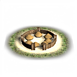
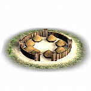

Imperium
Imperium Settlement sizes
← all settlements · all regions · wiki index
Every settlement in RIS sits on a ladder of 6 sizes. The rung it is on decides three things: what it can build, what it can raise, and how large it is allowed to grow before overcrowding starts. These pages say what each rung does, one page per size.
Village < Town < Large town < City < Large city < Huge city
Where these answers come from
The ladder is declared twice — by 8 cultures in descr_sm_settlements.txt and by 22 in descr_cultures.txt — and both files give the same 6 names in the same order. The population figures are descr_cultures.txt's own; there is no descr_settlement_mechanics.txt in RIS, which was the first place looked. What each size unlocks is the settlement_min field that every one of the 273 building levels in export_descr_buildings.txt carries, with units reached through the levels that can raise them.
The ladder
Population is what it takes to reach the rung; ceiling is the population above which overcrowding starts. Both are the same for all 22 cultures. Builds and units are what *first* becomes available at that size — the cumulative figures are on each page.
| Size | Population | Ceiling | Builds | Units | At the start | Size | Population | Ceiling | Builds | Units | At the start | ||
|---|---|---|---|---|---|---|---|---|---|---|---|---|---|
| Village | 0 | 5,800 | 1 | — | 0 |  | Town | 1,500 | 9,000 | 47 | 739 | 716 | |
 | Large town | 4,000 | 16,000 | 81 | — | 481 | City | 9,000 | 22,000 | 75 | 3 | 89 | |
| Large city | 17,000 | 30,000 | 46 | 1 | 15 | Huge city | 27,000 | 60,000 | 23 | — | 4 |
Only 4 of the 176 settlement pictures the mod's files declare are files in the mod folder — the rest resolve into the base game's packed data, which these pages do not read. Those 4 are the nomad set, and they cover 4 of the 6 rungs; the rungs above City are declared with the same picture as City, so no thumbnail is shown for them.
How the map is distributed
The campaign file places 1,305 settlements and gives every one of them a size. Village is a rung no settlement starts on — it exists in the rules and nowhere on the map at turn 0.
Culture is the owning faction's, from descr_sm_factions.txt.
Read the largest row with care: Free Peoples alone holds 502 settlements — 38% of the map — and descr_sm_factions.txt gives that faction the culture libyan, so every one of them counts on that row. It is unclaimed ground, not a people.
| Culture | Town | Large town | City | Large city | Huge city | Total | Culture | Town | Large town | City | Large city | Huge city | Total |
|---|---|---|---|---|---|---|---|---|---|---|---|---|---|
| libyan | 405 | 99 | 9 | 1 | — | 514 | e_hellenistic | 73 | 100 | 36 | 10 | 3 | 222 |
| barbarian | 46 | 52 | 6 | — | — | 104 | greek | 23 | 41 | 9 | 3 | — | 76 |
| w_hellenistic | 21 | 24 | 8 | — | — | 53 | carthaginian | 22 | 14 | 8 | — | 1 | 45 |
| roman | 12 | 25 | 1 | 1 | — | 39 | arab | 19 | 11 | 1 | — | — | 31 |
| brittonic | 13 | 11 | — | — | — | 24 | celtiberian | 10 | 13 | — | — | — | 23 |
| illyrian | 11 | 12 | — | — | — | 23 | germanic | 8 | 14 | — | — | — | 22 |
| indian | 13 | 3 | 5 | — | — | 21 | iranian | 9 | 11 | 1 | — | — | 21 |
| eastern | 11 | 9 | — | — | — | 20 | scythian | 7 | 13 | — | — | — | 20 |
| iberian | 3 | 7 | 3 | — | — | 13 | thracian | 4 | 9 | — | — | — | 13 |
| ethiopian | 3 | 6 | 1 | — | — | 10 | dacian | 3 | 5 | 1 | — | — | 9 |
| anatolian | — | 2 | — | — | — | 2 | All | 716 | 481 | 89 | 15 | 4 | 1,305 |
How each number on this page was counted, and checked
- The ladder —
settlementRanks()over descr_sm_settlements.txt gives village < town < large_town < city < large_city < huge_city
from 8 culture blocks, 0 of which disagree with the longest. The keys of the settlement upgrade levels block in descr_cultures.txt give village < town < large_town < city < large_city < huge_city across 22 cultures. The two agree.
- Population figures — read per culture, then compared across all 22 of them for each of the
5 fields at each of the 6 sizes, 660 values in all. Every culture gives the same number, so a single figure is published.
- Builds — the
settlement_minfield on each building level, counted through the shared
parser (273 of 273 level blocks) and, independently, as a flat pattern over the file text (273 lines). The two agree.
- Units — 29,894 recruit lines resolved to the 743 distinct units they name, keyed on
each unit's EDU dictionary so the same unit under three type names collapses to one. Every line resolved to a level its chain declares.
- Settlements at the start — 1,305 from the campaign parser, and 1,305
levellines
found by a flat pattern over the same file. The per-size counts agree exactly.